Building the digital identity for a football scouting organisation that means business.
UDe Sports Management Limited came with a clear mission — connect Nigerian football talent to global opportunities. What they needed was a brand and digital presence serious enough to open the right doors. I delivered a full identity system, brand guidelines, a reference website and an admin dashboard, built on a dark, editorial design language made to command attention.
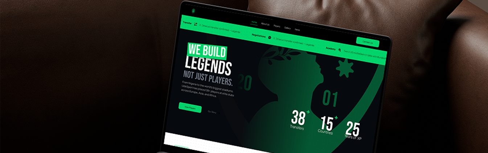
The Intro
UDE Sports Management Limited is a Nigerian football scouting organisation with serious ambitions. They sit at the intersection of local talent and global clubs identifying players, managing careers, and brokering the kind of opportunities that change lives. But their digital presence didn't reflect any of that weight. The brand needed to catch up to the vision.
The brief covered everything: brand identity, a token-driven design system, brand guidelines documentation, a reference website, and an admin dashboard for internal operations. It was a full-stack brand build, and it needed to feel authoritative from the first pixel.
The Challenge
Football scouting in Nigeria operates largely on reputation and relationships. Organisations like UDe are doing serious, consequential work but without the visual credibility to match, they risk being overlooked by the international clubs and agents they're trying to reach.
The challenge wasn't just design. It was trust. Every touchpoint from a brand guidelines PDF to a dashboard screen had to signal that this was an organisation operating at the highest level, even before a word was read.
Specific problems we were solving:
- No existing brand system. starting entirely from zero.
- The identity needed to work across digital, print, and motion contexts.
- The website had to function as a reference and credibility anchor for global partners.
- The admin dashboard needed to be functional and polished, not an afterthought.
- Everything had to feel cohesive — one ecosystem, not a collection of disconnected pieces.
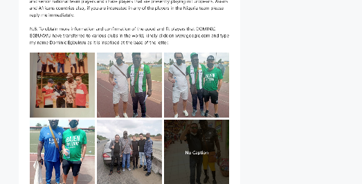
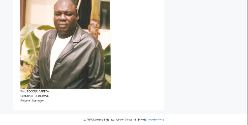
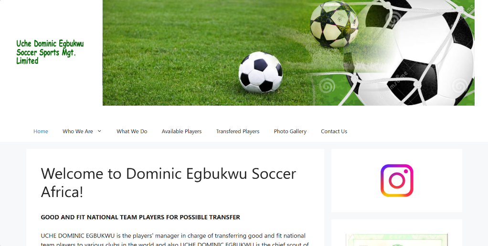
Kick Off
The project started with a positioning conversation. Who is UDE Sports talking to? What does a global football club or agent need to feel when they land on the site or open a pitch document? The answer was clear: confidence, competence, and credibility.
From there we established the creative direction. Dark, editorial, premium. A system that borrowed visual language from elite sports brands not the grassroots aesthetic that dominates Nigerian football online. We wanted UDE to look like they belonged in the same room as the organisations they were pitching to.
Key decisions made at kick-off:
- Dark-first design system — deep backgrounds, high contrast, sharp type.
- Two hero brand colours: Goal Green (#00E87A) and Transfer Gold (#F0B429).
- Brand guidelines to be delivered as a polished document alongside the visual system.
The Process
The build happened in layers. Identity first, then system, then product.
The identity phase covered logomark exploration, colour palette definition, and typographic scale. The UDE logomark needed to carry meaning — the final direction balanced a strong geometric form with subtle references to movement and football culture, without leaning into cliché.
Once the identity locked, the design token system was built out — mapping every colour, spacing unit, type style, and component state to named variables. This was critical: the website, dashboard, and any future product all needed to pull from the same source of truth.
The reference website was designed to function as both a public face and a pitch tool. Clean information architecture, strong hero sections, and a layout built to showcase talent profiles and organisational credibility in equal measure.
The admin dashboard came last — designed around the internal workflows UDE's team actually uses: player management, scouting reports, event tracking, and communication. Functional, but never clinical. The same dark token system carried through so the internal tool felt like part of the same product family.
Brand Identity
The UDE Sports identity system was built to be durable. Not trend-chasing something that could anchor the organisation's credibility for years without needing a refresh every season.
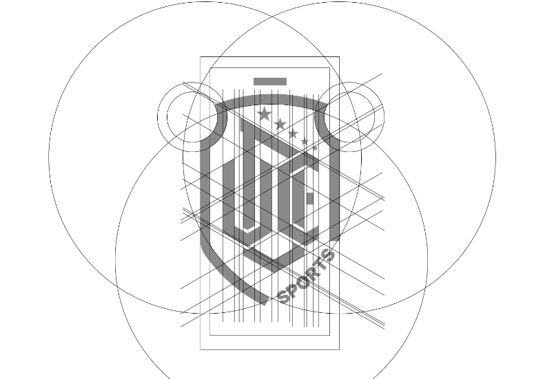
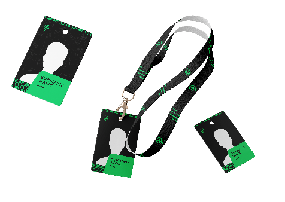
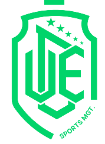
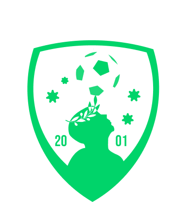
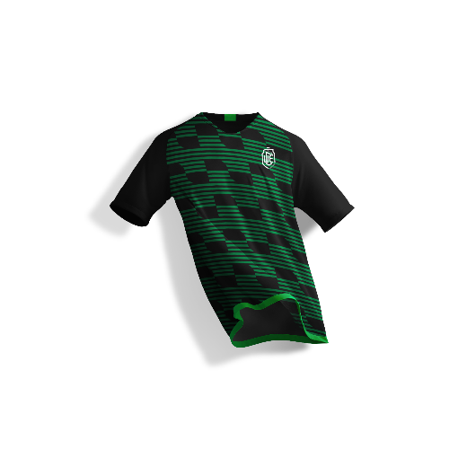
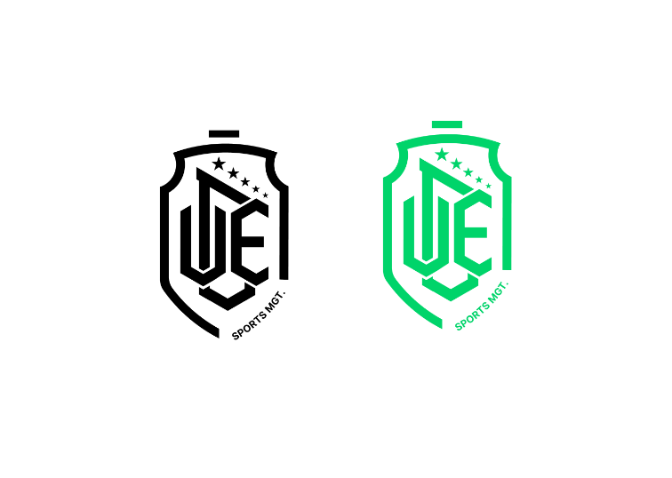
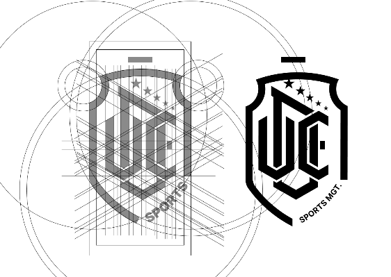
UI / Screens
The reference website and admin dashboard are the two primary digital touchpoints delivered under this project.
The website leads with the organisation's story — who they are, what they do, and the talent they represent. Sections are structured to serve two audiences simultaneously: the global partner scanning for credibility markers, and the Nigerian player or family looking for a trustworthy path forward.
The admin dashboard handles the operational layer — player profiles, scouting records, event calendars, and internal communications. The UX prioritises clarity and speed: the team needed to move fast between records without getting lost in the interface.
Both products run on the same token system, meaning any future expansion — a mobile app, a player-facing portal, a scouting tool — can be built without rebuilding the design foundation.
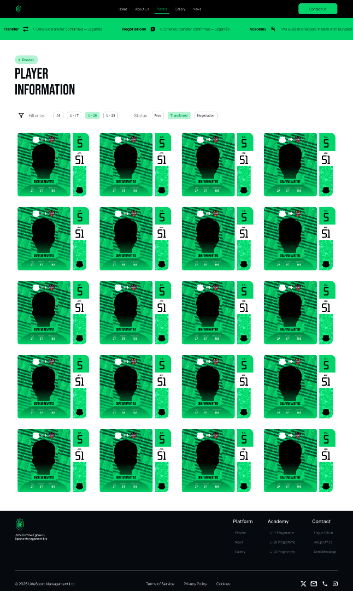
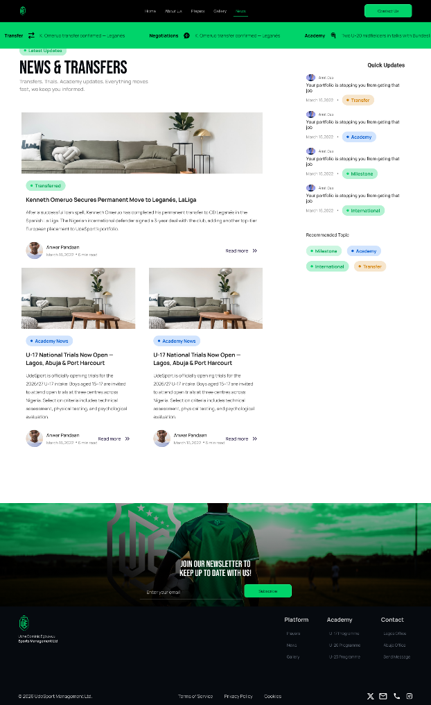
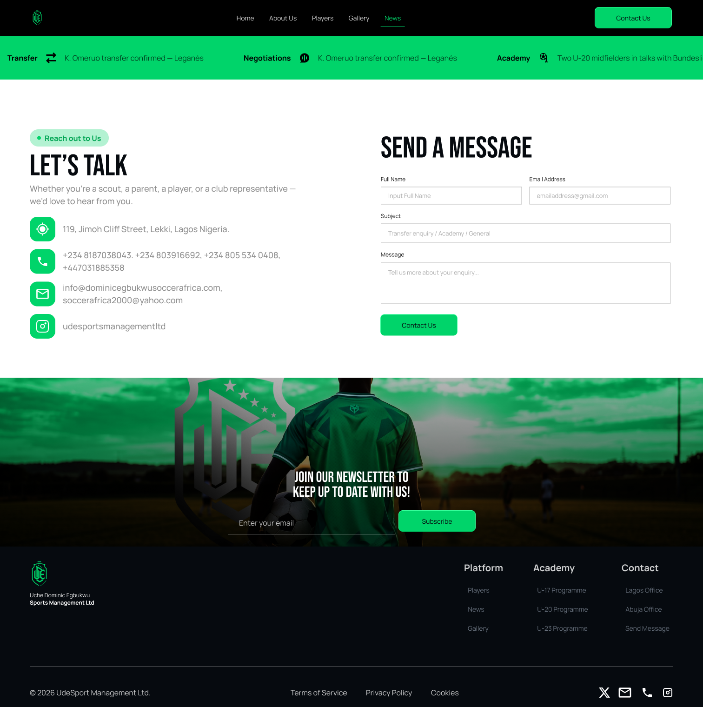
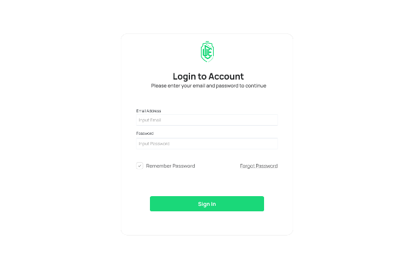
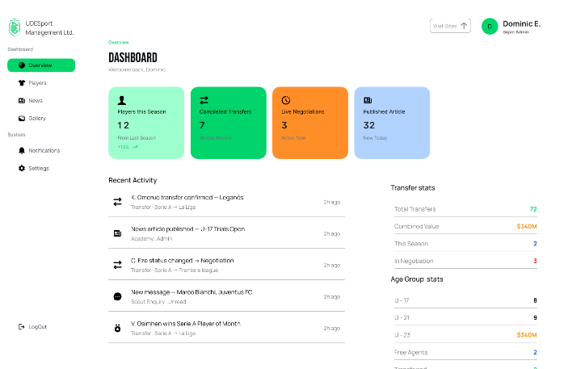
Closer
UDE Sports was a project that demanded seriousness at every level. A scouting organisation that moves in elite football circles can't afford to look like it doesn't belong — and the work we built together makes sure they never do.
From the logomark to the dashboard, every decision was made in service of one outcome: building a brand that opens doors. That's the job. I'm proud of how it came together.
Creative Designer
Ekari Victor Iheomimi
Developer
Oscar Chiemeka
Enjoyed reading this? Thank you.
This took a bit of work to put together, so if you liked it, I'd really appreciate you sharing it.